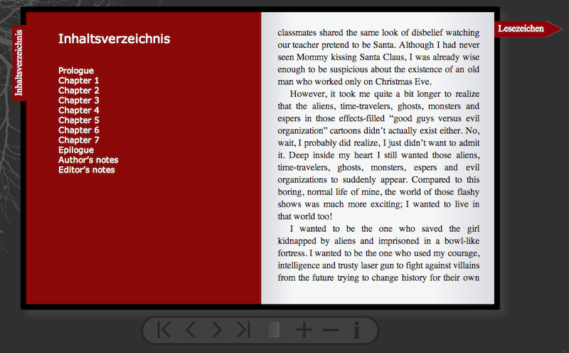

Anmerkung:
Das Projekt wurde in HTML5 programmiert deswegen sollten Sie einen aktuellen Browser benutzen. Empfohlen werden die aktuelle Versionen von:- Chrome (Mac/Win)
- Firefox (Mac/Win)
- Safari (Mac)
- Opera (Mac/Win)
- WebKit (Mac)
Vom Internet Explorer raten wir ab.
Das Projekt wurde mit den aktuellen Versionen von XAMPP (Win/Mac) getestet. Sie können aber durchaus auch Ihren eigenen Webserver und PHP benutzen.
Beigelegt ist:
- ePub Ordner - Das Projekt- prüfprotokoll.doc - Das Prüfprotokoll
- prüfvorschrift.doc - Die Prüfvorschriften
Installationsanleitung:
Die einfachste Variante ist unsere Projekt-Seite zu besuchen. Sie ist auf exakt dem gleichen Stand wie die Abgabe und getestet.Admin-Verwaltung - Zum Verwalten und Hochladen von ePubs
Beispiel ePub - Zur Anzeige der hochgeladenen ePubs
Anleitung zum selbst verwenden:
- Installieren Sie XAMPP falls Sie nicht ihren eigenen Webserver benutzen.
- Kopieren Sie den Ordner "ePub" in den Ordner /Applications/XAMPP/htdocs/ oder in den Webseiten Ordner Ihres User-Ordners (MAC) oder XAMPP\htdocs\ (Win)
- Nun können Sie unser Projekt unter http://localhost/mathematikum oder http://localhost/~USERNAME/mathematikum/ (Mac) aufrufen
Wie das Projekt funktioniert:
Unser Projekt besteht aus zwei Teilen. Zum einen aus der index.php mit der die hochgeladenen ePubs betrachtet werden können, und zum anderen aus der admin.php zum Verwalten und Hochladen von ePubs.Der index.php wird ein Hash wie folg übergeben, um ein bestimmtes ePub aufzurufen:
index.php?id=HASH-HERE
Der erste Schritt sollte sein die Admin-Verwaltung (admin.php) aufzurufen und sich mit dem richtigen Passwort anzumelden. In unserem Fall ist das Passwort "admin", dies kann aber einfach mit einem Text-Editor in der admin.php geändert werden.
Wenn das Passwort wie im unten stehenden Bild
richtig eingegeben wurde, sollte die folgende Seite angezeigt werden.
"Verwalte ePub" zeigt alle ePubs in einer Bibliotheksdarstellung an. Über diese lässt sich der eindeutige Link zu dem jeweiligen Buch zurückgeben und man kann das Buch löschen. Außerdem werden auch die Buchinformationen angezeigt.
Wenn man über eines der kleinen Buchcover am unteren rand hovert, erscheint die Buch Informationen. Die Pfeile links und rechts der kleinen Cover, sind zum Blättern in der Bibliothek falls mehr als sieben Bücher vorhanden sind. In der oberen rechten Ecke der Buchinformation, befindet sich ein Link zum Löschen (Mülleimer) und ein Link (Kette), um sich die URL zum verbreiten und weitergeben des Buches geben zu lassen.
"Upload ePub" führt zur Seite mit der man ePubs und die zugehörigen Coverbilder hochladen kann. Im ersten Upload Input muss eine ePub Datei angegeben werden und im zweiten eine Bild Datei. Danach kann auf "Upload" gedrückt werden. Ein Statusbalken zeigt den aktuellen Uploadstatus. Ist der Upload geglückt, wird ein Link angezeigt der zum hochgeladenen ePub führt und der auch weitergegeben werden kann. Unter dem Link wird als Test die erfolgreich hochgeladene ePub selbst ausgegeben.
Falls dies alles geglückt ist, kann man sich eine ePub anschauen. Wenn man die ePub zum ersten Mal besucht, wird eine kleine Information angezeigt, die man mit einem Klick auf die Infobox verschwinden lassen kann.

Wenn geklickt wird, wird die eigentliche Buchdarstellung, mit einer Toolbar am unterem, dem Lesezeichen am rechten und dem Inhaltsverzeichnis am linken Rand, angezeigt. In der Toolbar sind die normalen Pfeile zum Vor- und Zurückblättern um eine Seite gedachte, Pfeile mit dem Balken an der Spitze sind zum springen zum nächsten Kapitel, die Buchseite wechselt zwischen Ein- und Zweiseitendarstellung, das Plus bzw. Minus ist zum Herein- und Heraus-Zoomen und das 'i' ist zum wieder einblenden der Infobox. Wenn auf das Lesezeichen geklickt wird, wird ein Cookie gesetzt mit der momentanen Position. Beim nächsten Aaufruf der Seite wird die Infobox nicht mehr angezeigt und es wird automatisch zur gespeicherten Seite gesprungen.
Außerdem ist es möglich mit einem Swipe links oder recht, zurück und vor zu blättern. Dies funktioniert nur auf einem Tablet oder Touchscreen Device.
Wenn auf das Inhaltsverzeichnis geklickt wird, wird eine rote Seite über der linken Buchseite mit dem Inhaltsverzeichnis eingeblendet. Wenn man auf ein Kapitel drückt wird zu diesem gesprungen.

Bei Problemen können Sie sich jeder Zeit bei uns melden:
Franz Weisflug - Carina Hoffmann - Anna Färber - Simone Weil
Wir wünschen viel Spaß!